The 41-node data page shows the processed
data as it enters the model. This article is everything upstream of
that: the raw sources, how the renewable potentials and profiles are
made, and the NUTS-level datasets (nuts_gs,
nuts_load, nuts_lines) with the aggregation
arithmetic that turns them into any coarser regional layer. The heavy
inputs (a 6.7 GB weather cutout, a PyPSA-Eur clone) do not ship, so
their figures are pre-rendered by
data-raw/data_sources_figures.R and committed; everything
drawn from shipped data is computed live on this page.
1. Weather: the cutout
Wind and solar availability come from one file: the cutout
europe-2025-sarah3-era5.nc — a 0.3° grid over Europe (177 ×
131 cells) with 8,760 hourly fields of wind speed, solar irradiance,
temperature and runoff for 2025. This is raw meteorology, not
capacity factors: 100 m wind speed (ERA5, regridded from its native
0.25°), direct and diffuse solar influx (SARAH-3 satellite data,
aggregated from its native 0.05° and 30-minute resolution). A 0.3° cell
is roughly 21 × 33 km at European latitudes. PyPSA-Eur turns it into
per-region hourly capacity factors; those arrive in the models as the
weather objects (W_ONWIND,
W_SOLAR, …).
fig("cutout-wind.png")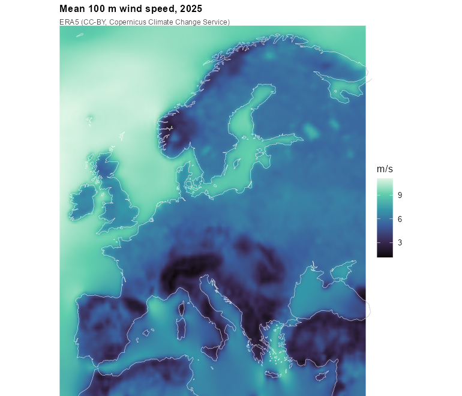
Mean 100 m wind speed over 2025, from the ERA5 fields of the cutout (CC-BY, Copernicus Climate Change Service).
fig("cutout-solar.png")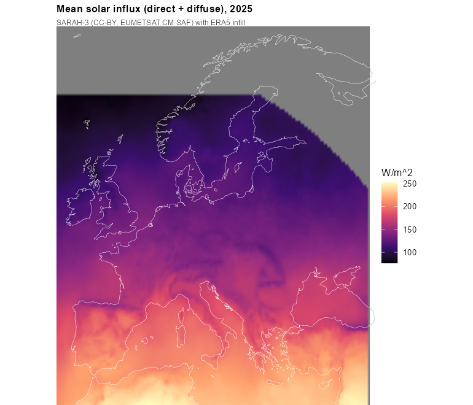
Mean solar influx (direct + diffuse) over 2025 — the SARAH-3 satellite record (CC-BY, EUMETSAT CM SAF) with ERA5 infill at high latitudes.
The exact licence notices ship in
system.file("LICENSE.note", package = "reneuro").
2. Demand: measured ENTSO-E series
Hourly national load for 2025 comes from the ENTSO-E transparency
platform (with NESO for Great Britain). It lands in the models as each
region’s demand, distributed below country level by a
GDP/population proxy.
fig("demand-entsoe.png")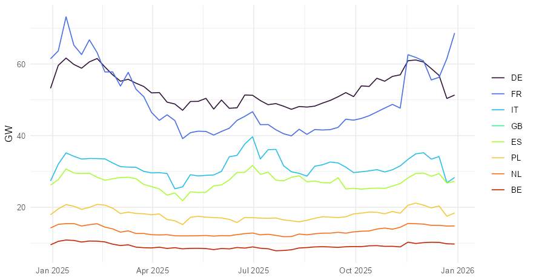
Weekly-mean measured demand for the eight largest systems, ENTSO-E transparency platform. The workflow fills the few countries with gaps (UA, MK, CY, AL) from template years.
The 2025 total across the modelled countries is 3,163 TWh — visible in the shipped models as the sum over the demand objects:
3. The existing fleet
Power plants come from powerplantmatching,
which deduplicates GEM, JRC, ENTSO-E, GPD and other registries into one
unit list — 157,549 units with coordinates and capacities. In the models
they become the non-extendable stock (nuclear, coal, hydro,
…) and the cap.lo floors on extendable carriers (wind,
solar); in the pypsa_eur_41_<year> horizon series
they also drive retirement, through announced closure dates where they
exist and assumed lifetimes elsewhere.
fig("fleet.png")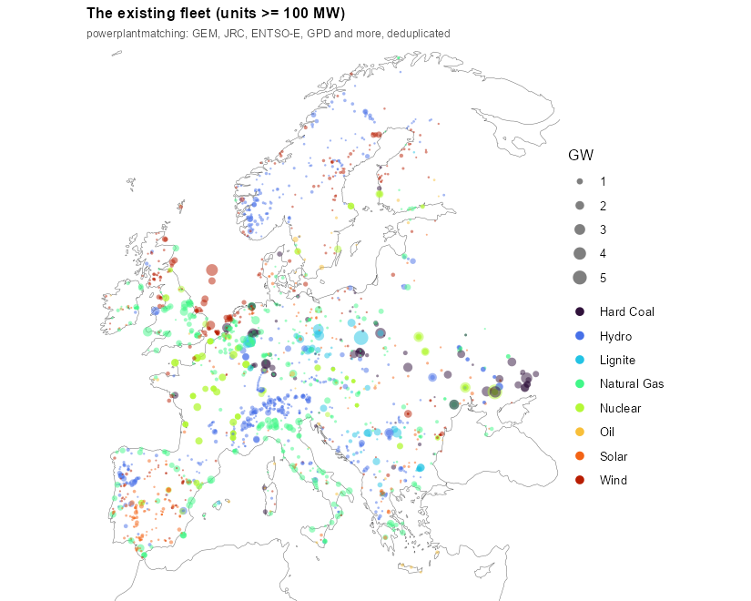
The existing fleet: units of 100 MW and above, sized by capacity, coloured by fuel — powerplantmatching (GEM, JRC, ENTSO-E, GPD and more, deduplicated).
4. The network source
Transmission comes from OpenStreetMap (which is what makes the
shipped data ODbL): substations and lines, simplified and clustered by
PyPSA-Eur. In the models it is the trade corridors — drawn
on the 41-node data page; the NUTS-level line
dataset and its aggregation arithmetic are documented below.
5. How potentials and profiles are made
Every wind and solar generator in the shipped models traces back to
two PyPSA-Eur artifacts: a potential
(p_nom_max, the MW that may be built per region) and a
profile (p_max_pu, the hourly capacity
factor). The order of the pipeline matters more than any single step:
clustering comes first. PyPSA-Eur clusters a network
that contains no generators at all, and only then computes land
eligibility, potentials, and profiles directly on the clustered
regions — the blending happens once, from weather cells straight
into whatever region set was chosen.
- Weather cutout — the single 0.3° grid above.
- Land eligibility — per carrier, a 100 m exclusion mask built from CORINE land cover, Natura 2000 protected areas, a 1 km urban buffer (onshore wind), ship density, water depth and shore distance (offshore). The eligible share of each 0.3° cell within each region becomes the availability matrix. No criterion involves the resource itself — no wind speed, no irradiation, no slope, no altitude.
-
Potential —
p_nom_max= eligible area × a flat deployment density (3 MW/km² onshore wind, 5.1 solar, 2 offshore). Every eligible km² counts the same, whatever its wind. - Profile — capacity factors are computed per cell from the cutout (Vestas V112 3 MW power curve onshore; crystalline-silicon panel at 35° tilt), then blended into one regional series with weights proportional to each cell’s mean capacity factor — “more generators are installed at better sites”.
Two properties follow that most users don’t expect:
The asymmetry. The potential counts all eligible land, but the profile is weighted toward the best cells. A region therefore offers its entire eligible area at close to its best-sites capacity factor — an optimistic bias that grows with region size and internal resource spread. At 41 nodes regions span whole countries; at NUTS3 the bias is mildest.
Nothing is filtered by quality. Regions whose mean
wind capacity factor is 0.2% survive alongside ones at 54%; a 0.094 MW
potential is carried through. A binning mechanism exists upstream
(resource_classes) that would split each region into
capacity-factor tiers, but it is off by default and off in these builds
— each region gets exactly one blended generator per carrier.
6. The land itself
The CORINE raster behind the exclusions, at CLC level 1, and what the per-carrier grid-code inclusion admits from it. Wind’s base is agriculture plus forest and natural land; solar trades the forests for artificial surfaces. About half the wind-only area is forest.
fig("corine_landtype.png", "data-sources")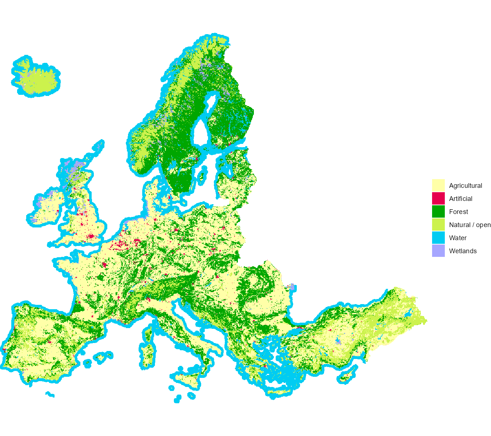
CORINE land cover at CLC level 1 (~5 km modal aggregate of the 250 m raster).
fig("corine_eligibility.png", "data-sources")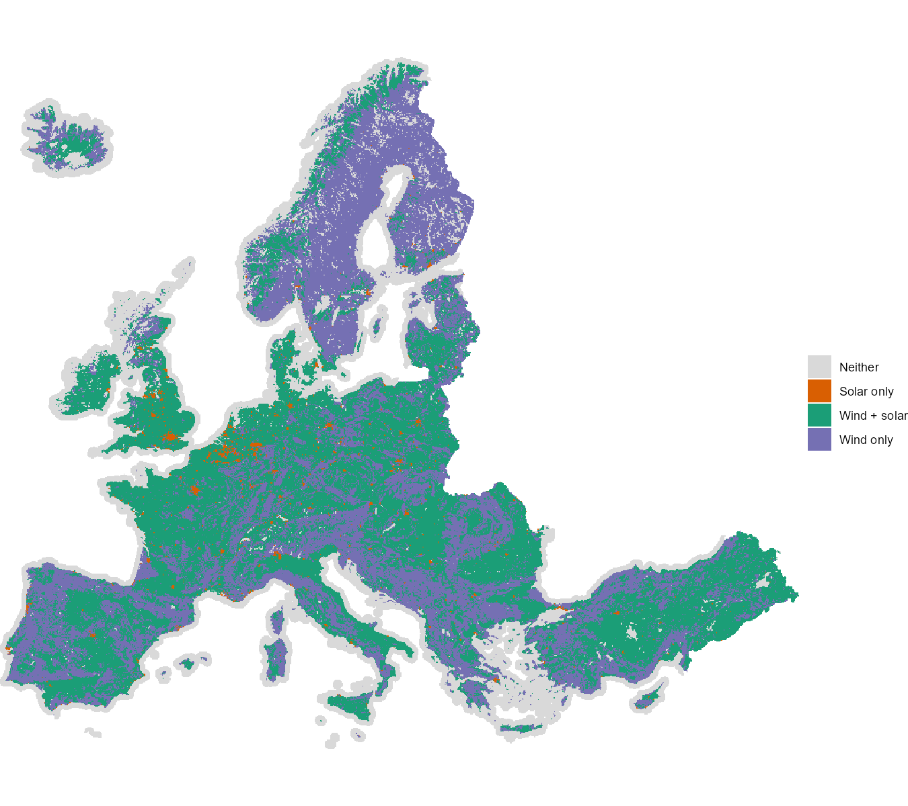
Land admitted by the PyPSA-Eur CORINE grid-code coding, per carrier. Inclusion only — Natura 2000, urban buffers and the other excluders apply on top.
7. Available land
The availability matrices behind the shipped models, drawn at the cutout’s own resolution. Dark cells are excluded (urban fabric and its buffer for wind, forests for solar, protected areas for both); the eligible remainder is dominated by agricultural land, which no exclusion touches.
fig("avail_map_onwind.png", "data-sources")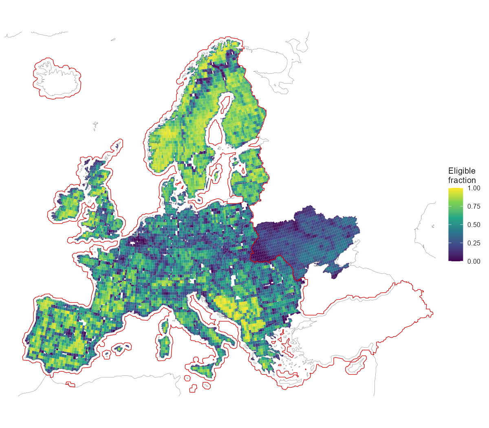
Available land for onshore wind: eligible share of each region-clipped cell after the land-use exclusions. The solid red line traces the CORINE raster coverage; outside it the shown fraction carries the flat 0.5 derate.
fig("mwmax_map_onwind.png", "data-sources")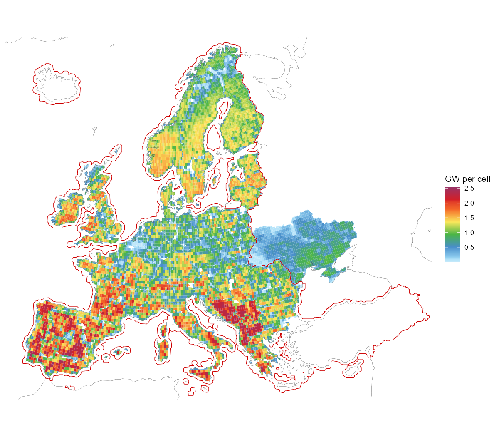
Installable onshore wind potential per cell: eligible area × 3 MW/km² (unfiltered; flat 0.5 derate outside the red CORINE coverage line).
Reconciliation: eligible area × density reproduces PyPSA’s
p_nom_max exactly (to the megawatt) for
wind and all offshore carriers. Solar differs by +1.8%, and the entire
difference sits in cells north of 65°N: SARAH-3 has no data there, and
PyPSA silently drops that eligible land from the solar potential rather
than excluding it by policy.
8. The NUTS datasets
Three shipped datasets carry the regional layer the models are built
on: nuts_gs (the geography and the data attached to it),
nuts_load (demand) and nuts_lines
(transmission). Each section below aggregates one of them from NUTS3 to
coarser levels and gives the arithmetic used, which differs by quantity:
capacities sum, per-capita values take a weighted mean, and peaks and
impedances have to be recomputed rather than combined.
Nested levels
gs <- nuts_gs
vapply(geoscales::geoscale_geoframes(gs),
function(f) length(geoscales::geoscale_regions(gs, f)), 0L)
#> europe nuts0 nuts1 nuts2 nuts3
#> 1 36 109 296 14771,477 NUTS3 atoms group into 296 NUTS2, 109 NUTS1, 36 countries and a
single europe root. Every finer code has exactly one
parent; the build asserts this rather than assuming it, and the
aggregation below depends on it.
The europe root is the only region at which a
continental commodity balance can be declared.
newCommodity(geoframe = "europe") gives one Europe-wide CO2
allowance or gas market; without it the coarsest balance is per country,
i.e. 36 separate markets.
library(geoscales)
lt <- as.data.frame(geoscale_leaftable(nuts_gs))
geoscale_autoplot(nuts_gs, type = "stack", direction = "down",
view = "oblique", colour = NA,
frame = T, frame_fill = ggplot2::alpha("grey60", 0.12),
data = lt, z = "cap_mw", rule = "share")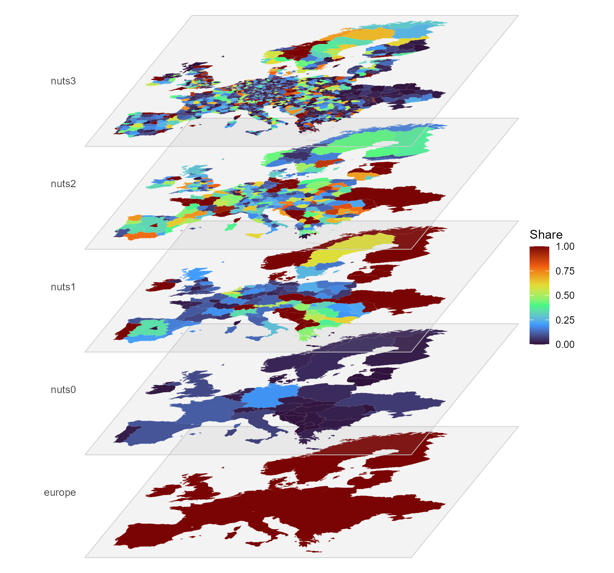
The region hierarchy as a multilayer stack, each plane one level,
coloured by each region’s share of its parent’s existing generation
capacity (cap_mw).
The same hierarchy as an icicle plot. The NUTS3 row is omitted: at 1,477 atoms most rectangles are thinner than their own outline, so the level reads as a solid band and adds nothing:
gs2 <- geoscales::geoscale_from_leaftable(
lt |> summarise(km2 = sum(km2), .by = c(europe, nuts0, nuts1, nuts2)),
geoframes = c("europe", "nuts0", "nuts1", "nuts2"),
key = "nuts2", weights = "km2")
energyRt::plot_geoscale(gs2, type = "icicle")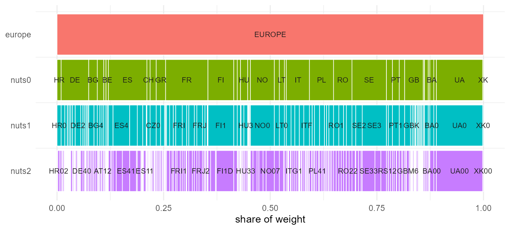
The region hierarchy as an icicle, europe down to NUTS2;
widths are area shares.
Four countries — BA, MD, UA, XK — have no NUTS at
all and are filled from OpenStreetMap adm1. Those regions
become the atoms, and the levels above them are padded
(MD0, MD00):
lt <- as.data.frame(geoscales::geoscale_leaftable(gs))
# Every aggregation below is "roll the atoms up to a coarser geoframe", which is
# a lookup from the NUTS3 code to its parent at that level. Named once here
# rather than rebuilt inline each time.
parent_of <- function(level, from = "nuts3") setNames(lt[[level]], lt[[from]])
lt |>
filter(nuts0 %in% c("BA", "MD", "UA", "XK")) |>
group_by(nuts0) |>
summarise(atoms = n(), nuts1 = first(nuts1), nuts2 = first(nuts2))
#> # A tibble: 4 × 4
#> nuts0 atoms nuts1 nuts2
#> <chr> <int> <chr> <chr>
#> 1 BA 3 BA0 BA00
#> 2 MD 37 MD0 MD00
#> 3 UA 27 UA0 UA00
#> 4 XK 7 XK0 XK00PyPSA-Eur repeats the adm1 code at every level, which makes each such
region its own parent. The derived hierarchy then contains pairs like
(MD-BA, MD-BA), and energyRt’s spatial roll-up becomes
vOutTot[MD-BA] = ... + vOutTot[MD-BA], forcing every other
term to zero without error.
Eurostat’s convention for identical geography is a distinct code per
level: Luxembourg is LU → LU0 → LU00 → LU000, and no NUTS
country produces an identity pair. The padding here follows that
convention. “NUTS1” and “NUTS2” for these four countries remain
stand-ins rather than real administrative levels.
f <- geoscales::geoscale_geoframes(gs)
vapply(seq_len(length(f) - 1L),
function(i) isTRUE(geoscales::geoscale_nests(gs, f[i], f[i + 1L])),
logical(1))
#> [1] TRUE TRUE TRUE TRUEEvery adjacent pair nests. Where nesting fails, a region has two parents and its balance is added into both.
What each region carries
The leaftable holds 14 data columns per region, in two families. The family determines what a column can be used for.
setdiff(names(lt), c("region", geoscales::geoscale_geoframes(gs)))
#> [1] "km2" "pop" "gdp"
#> [4] "gdp_total" "load_twh" "peak_mw"
#> [7] "n_buses" "cap_mw" "hydro_mw"
#> [10] "pot_onwind" "pot_solar" "pot_solar_hsat"
#> [13] "pot_offwind_ac" "pot_offwind_dc" "pot_offwind_float"Geographic, read from the region shapes and defined for all 1,477 atoms:
| column | unit | kind |
|---|---|---|
km2 |
km², equal-area projection | extensive |
pop |
thousands | extensive |
gdp |
EUR per capita | intensive |
gdp_total |
thousand EUR | extensive |
Model, read from the NUTS3 network and located at substation buses:
| column | unit | kind |
|---|---|---|
load_twh |
TWh per year | extensive |
peak_mw |
MW, coincident | neither |
n_buses |
substations in the region | extensive |
cap_mw, hydro_mw
|
MW built today | extensive |
pot_onwind, pot_solar,
pot_solar_hsat
|
MW of potential | extensive |
pot_offwind_ac, pot_offwind_dc,
pot_offwind_float
|
MW of potential | extensive |
geoscales::geoscale_weights(gs)
#> [1] "km2" "pop" "gdp_total" "load_twh" "cap_mw"
#> [6] "pot_onwind" "pot_solar"A weight splits a coarse quantity across atoms and averages an intensive one back up. Seven columns are declared as weights, and the choice changes the result. German demand split by area differs from the same demand split by population or by measured demand:
de <- filter(lt, nuts0 == "DE")
vapply(c("km2", "pop", "load_twh", "pot_onwind"),
function(w) round(max(de[[w]]) / sum(de[[w]]), 4), 0)
#> km2 pop load_twh pot_onwind
#> 0.0154 0.0440 0.0312 0.0165The largest German region takes 1.5% of the country by area and 4.4% by population. No check rejects an unsuitable weight, so the choice is the caller’s to make.
gdp is intensive — summing it over Germany gives 15.6
million, which is not a quantity; the population-weighted mean, ~41,800
EUR, is its GDP per capita, and gdp_total ships as the
extensive money weight:
lt |>
group_by(nuts0) |>
summarise(plain_sum = round(sum(gdp)),
pop_weighted_mean = round(sum(gdp * pop) / sum(pop)),
gdp_total_bn = round(sum(gdp_total) * 1e3 / 1e9)) |>
arrange(desc(gdp_total_bn)) |>
head(5)
#> # A tibble: 5 × 4
#> nuts0 plain_sum pop_weighted_mean gdp_total_bn
#> <chr> <dbl> <dbl> <dbl>
#> 1 DE 15618746 41813 3475
#> 2 GB 6887044 37577 2505
#> 3 FR 2963348 36685 2391
#> 4 IT 2929600 30056 1795
#> 5 ES 1239705 26641 1193The renewable potentials overlap and must not be summed across
carriers: pot_solar and pot_solar_hsat are
fixed-tilt and single-axis-tracking photovoltaics on the same land, and
313 of the 314 offshore regions carry more than one
pot_offwind_* type over the same sea area. They ship as
separate columns so no summing rule is imposed; the offshore columns are
excluded from the weight set because they are zero for every landlocked
country.
lt |>
summarise(regions = n(),
no_substation = sum(n_buses == 0),
pct = round(100 * mean(n_buses == 0), 1))
#> regions no_substation pct
#> 1 1477 442 29.9PyPSA-Eur places demand, plant and potential at substation buses, and 442 NUTS3 regions contain none. Every model column is zero there; the geographic columns are unaffected. The same applies at coarser levels:
bind_rows(lapply(c("nuts2", "nuts1", "nuts0"), function(l) {
lt |>
group_by(group = .data[[l]]) |>
summarise(buses = sum(n_buses), .groups = "drop") |>
summarise(level = l, groups = n(), no_substation = sum(buses == 0))
}))
#> # A tibble: 3 × 3
#> level groups no_substation
#> <chr> <int> <int>
#> 1 nuts2 296 7
#> 2 nuts1 109 3
#> 3 nuts0 36 0Seven NUTS2 groups and three NUTS1 groups contain no substation. A weight summing to zero over a group divides by zero when averaging into it; the affected groups are recorded on the object rather than substituted:
Load
head(nuts_load, 3)
#> level region load_twh peak_gw n_buses
#> 1 europe EUROPE 3356.475513 543.3607 4356
#> 2 nuts0 AL 7.605935 1.6590 13
#> 3 nuts0 AT 69.470957 11.4410 66Energy is extensive — going from 1,477 regions to 36 requires only a sum, and it must agree with what was computed independently at each level:
Show code
fine <- filter(nuts_load, level == "nuts3")
agg_load <- function(col) {
fine |>
mutate(region = parent_of(col)[region]) |>
group_by(region) |>
summarise(load_twh = sum(load_twh), .groups = "drop") |>
mutate(level = col)
}
derived <- bind_rows(lapply(c("nuts0", "nuts1", "nuts2"), agg_load))
nuts_load |>
filter(level %in% c("nuts0", "nuts1", "nuts2")) |>
select(level, region, load_twh) |>
inner_join(derived, by = c("level", "region"),
suffix = c("_shipped", "_derived")) |>
group_by(level) |>
summarise(regions = n(),
max_abs_diff = max(abs(load_twh_derived - load_twh_shipped)))#> # A tibble: 3 × 3
#> level regions max_abs_diff
#> <chr> <int> <dbl>
#> 1 nuts0 36 1.42e-14
#> 2 nuts1 109 7.11e-15
#> 3 nuts2 296 7.11e-15Peak is not extensive:
Show code
pk <- function(fine_lv, coarse_lv) {
f <- filter(nuts_load, level == fine_lv)
m <- parent_of(coarse_lv, from = fine_lv)
tibble(level = coarse_lv,
summed = sum(tapply(f$peak_gw, m[f$region], sum)),
coincident = sum(nuts_load$peak_gw[nuts_load$level == coarse_lv]))
}
bind_rows(
pk("nuts3", "nuts2"), pk("nuts2", "nuts1"), pk("nuts1", "nuts0"),
tibble(level = "europe",
summed = sum(nuts_load$peak_gw[nuts_load$level == "nuts0"]),
coincident = nuts_load$peak_gw[nuts_load$level == "europe"])) |>
mutate(overstated_pct = round(100 * (summed / coincident - 1), 2))#> # A tibble: 4 × 4
#> level summed coincident overstated_pct
#> <chr> <dbl> <dbl> <dbl>
#> 1 nuts2 580. 580. 0
#> 2 nuts1 580. 580. 0
#> 3 nuts0 580. 580. 0
#> 4 europe 580. 543. 6.81In general peak(parent) <= sum(peak(children)), the
gap being load diversity. Here the gap is zero within every country and
appears only across Europe, at 6.8%: PyPSA-Eur builds per-bus load as a
static fraction times the national hourly series, so every bus in a
country has the same normalised shape and their peaks coincide.
Resolution finer than a country therefore adds spatial detail to the
level of demand but not to its shape — at NUTS3, 1,477 regions share 36
distinct profiles. 442 regions carry no demand
(load.substation_only: true places demand only on
substation buses).
Show the map helpers
library(ggplot2)
level_sf <- function(lv) {
geoscales::geoscale_geometry(nuts_gs, geoframe = lv) |>
rename_with(\(nm) ifelse(nm == lv, "region", nm))
}
GF <- geoscales::geoscale_geoframes(nuts_gs)
parent_frame <- function(lv) GF[[which(GF == lv) - 1L]]
load_map <- function(lv) {
shares <- nuts_load |>
filter(level == lv) |>
select(region, load_twh) |>
left_join(distinct(lt, region = .data[[lv]],
parent = .data[[parent_frame(lv)]]), by = "region") |>
group_by(parent) |>
mutate(total = sum(load_twh),
share = if_else(total > 0, 100 * load_twh / total, NA_real_)) |>
ungroup()
level_sf(lv) |>
left_join(select(shares, region, load_twh, share), by = "region")
}
BOX <- list(xlim = c(-11, 41), ylim = c(34, 71)) # crop overseas territoriesShow code
LEVELS <- c("nuts0", "nuts1", "nuts2", "nuts3")
maps <- do.call(rbind, lapply(LEVELS, function(l) {
s <- load_map(l); s$level <- l; s
}))
maps$level <- factor(maps$level, levels = LEVELS)
ggplot(maps) +
geom_sf(aes(fill = share), colour = NA) +
facet_wrap(~level, ncol = 2) +
scale_fill_viridis_c(option = "C", trans = "sqrt",
name = "% of parent\nregion") +
coord_sf(xlim = BOX$xlim, ylim = BOX$ylim, expand = FALSE) +
theme_void() +
theme(strip.text = element_text(face = "bold"))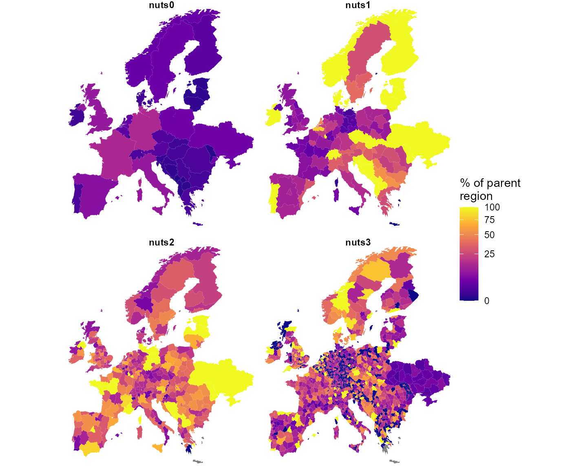
Each region’s share of its parent’s demand, per level. Dark = little of the parent’s demand (including the 442 substation-less regions); grey = the parent itself carries no demand.
Transmission lines
nuts_lines holds every base_s line whose
ends fall in different NUTS3 regions. The rest were dropped:
p <- attr(nuts_lines, "reneuro_provenance")
c(lines_total = p$lines_total, intra_nuts3_dropped = p$lines_intra_dropped,
shipped = nrow(nuts_lines))
#> lines_total intra_nuts3_dropped shipped
#> 7360 4218 314257% of lines never leave a NUTS3 region, and they carry 53% of the network’s capacity. The finest level available discards more than half the grid.
Show the aggregation code
centroids <- function(level) {
s <- level_sf(level)
cc <- suppressWarnings(sf::st_coordinates(sf::st_centroid(sf::st_geometry(s))))
tibble(region = s$region, cx = cc[, 1], cy = cc[, 2])
}
haversine <- function(x1, y1, x2, y2) {
R <- 6371; r <- pi / 180
a <- sin((y2 - y1) * r / 2)^2 +
cos(y1 * r) * cos(y2 * r) * sin((x2 - x1) * r / 2)^2
2 * R * asin(pmin(1, sqrt(a)))
}
agg_lines <- function(level, length_factor = 1.25) {
m <- parent_of(level)
ct <- centroids(level)
nuts_lines |>
mutate(f = m[from], t = m[to]) |>
filter(f != t) |>
mutate(a = pmin(f, t), b = pmax(f, t)) |>
left_join(rename(ct, a = region, cx0 = cx, cy0 = cy), by = "a") |>
left_join(rename(ct, b = region, cx1 = cx, cy1 = cy), by = "b") |>
mutate(new_len = haversine(cx0, cy0, cx1, cy1) * length_factor,
lf = if_else(length_km > 0, new_len / length_km, new_len)) |>
group_by(from = a, to = b) |>
summarise(s_nom = sum(s_nom), n_lines = n(),
length_km = first(new_len),
x = 1 / sum(1 / (lf * x)), # parallel, length-rescaled
cx0 = first(cx0), cy0 = first(cy0),
cx1 = first(cx1), cy1 = first(cy1),
.groups = "drop")
}Three rules, taken from pypsa.clustering.spatial:
-
s_nomsums — thermal ratings of parallel circuits add; -
lengthis recomputed as the great-circle distance between the two region centroids timesline_length_factor(1.25) — it is not inherited; -
xis rescaled by the length ratio, then parallel-combined as1 / Σ(1/x).
bind_rows(lapply(LEVELS, function(l) {
a <- agg_lines(l)
tibble(level = l, corridors = nrow(a),
GW = round(sum(a$s_nom) / 1e3),
median_km = round(median(a$length_km)),
median_x = round(median(a$x), 2))
}))
#> # A tibble: 4 × 5
#> level corridors GW median_km median_x
#> <chr> <int> <dbl> <dbl> <dbl>
#> 1 nuts0 65 356 459 28.8
#> 2 nuts1 203 1357 253 16.0
#> 3 nuts2 547 2518 154 13.2
#> 4 nuts3 1789 5004 85 11.2Checked against PyPSA-Eur’s own 41-cluster network, built by its
cluster_networkrule: the capacity crossing a country boundary sums to 356,352.715 MW there and 356,352.715 MW in the table above. The corridor counts differ (77 against 65) because 41 clusters is not 36 countries. The comparison requires a clone and so is recorded here rather than run.
Aggregating to countries lengthens the network rather than shortening
it: a corridor becomes the distance between two national centroids, so
r rises and losses are overestimated at coarse levels.
Capacity is overestimated for a separate reason: summing thermal ratings
ignores N-1 security and loop flows. PyPSA-Eur compensates with a flat
s_max_pu = 0.7; the two errors act in opposite directions
and do not cancel.
Show code
nets <- bind_rows(lapply(LEVELS, function(l) mutate(agg_lines(l),
level = l)))
nets$level <- factor(nets$level, levels = LEVELS)
ggplot() +
geom_sf(data = maps, fill = "wheat", colour = "white", linewidth = 0.1) +
geom_segment(data = nets,
aes(x = cx0, y = cy0, xend = cx1, yend = cy1,
linewidth = s_nom / 1e3),
colour = "dodgerblue", alpha = 0.8, lineend = "round") +
facet_wrap(~level, ncol = 2) +
scale_linewidth_continuous(range = c(0.1, 1.4), name = "GW") +
coord_sf(xlim = BOX$xlim, ylim = BOX$ylim, expand = FALSE) +
theme_void() +
theme(strip.text = element_text(face = "bold"))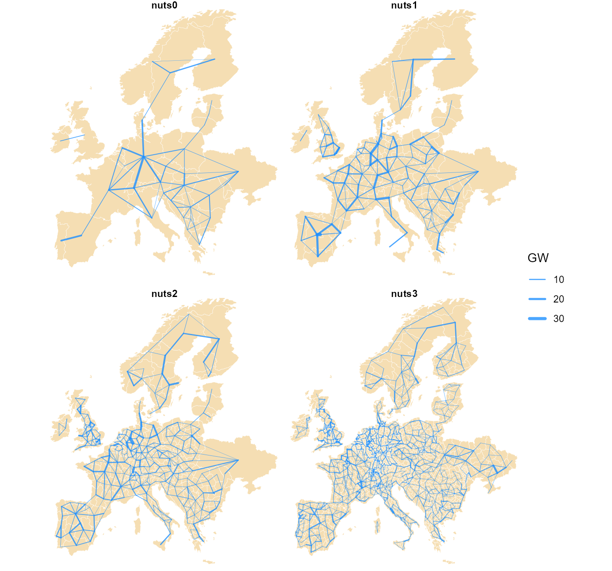
The NUTS-level transmission aggregated to each level: straight chords between region centroids, width proportional to summed thermal rating.
Every quantity and its arithmetic
| quantity | kind | fine → coarse | coarse → fine |
|---|---|---|---|
km2, pop, gdp_total
|
extensive | sum |
split by weight |
load_twh, cap_mw,
hydro_mw
|
extensive | sum |
split by weight |
pot_* |
extensive |
sum within a carrier
|
split by weight |
n_buses |
extensive | sum |
cannot be split |
gdp (per capita) |
intensive |
weighted_mean by pop
|
copy |
peak_mw |
neither | cannot be derived — recompute from hourly | — |
s_nom |
extensive |
sum, intra-region dropped |
— |
length |
geometric | recomputed from centroids × 1.25 | — |
x, r
|
reciprocal | rescale by length, then 1/Σ(1/x)
|
— |
| load shape | — | already national; finer adds nothing | — |
The kind determines the reduction. Applying the wrong one produces no error: a sum of per-capita GDP, of peaks, or across two overlapping potentials returns a plausible number that does not correspond to any quantity.
9. Known caveats
-
Not every upstream dataset covers the whole modeled
territory. Some of the redistributable datasets behind the
exclusions are unavailable for parts of the PyPSA-Eur domain; where that
is the case the affected exclusion is skipped upstream and availability
is overstated. The improved layer draws the coverage boundary as a solid
red line on the potential maps and applies a flat 0.5 availability
derate outside it (
non_corine_derateinparams.yml) as a conservative stand-in. Extending the coverage with data from other sources is possible — see the source table below and the package’sLICENSE.notefor what is used and under which terms. - Capacity-factor granularity is ~25–30 km. Eligibility is known at 100 m, but the resource is only known per 0.3° cell — a windy ridge and a calm valley inside one cell are indistinguishable.
10. Sources at a glance
| source | licence | vintage | becomes |
|---|---|---|---|
| ERA5 (Copernicus C3S) | CC-BY | 2025 hourly | wind / hydro / temperature profiles → weather
objects |
| SARAH-3 (EUMETSAT CM SAF) | CC-BY | 2025 hourly | solar profiles → weather objects |
| ENTSO-E transparency (+ NESO for GB) | open re-use | 2025 hourly | national load → demand
|
| powerplantmatching | GPL-3 code, mixed open registries | through 2024 | fleet → stock, cap.lo floors, retirement
in the horizon series |
| OpenStreetMap (+ TYNDP projects) | ODbL | 2026 extract | grid → trade corridors (the reason the data licence is
ODbL) |
| NUTS / JRC / Eurostat layers | EU open licences | mixed | region geometry + attributes → nuts_gs
|
| Natural Earth (via rnaturalearth) | public domain | 1:50m | coastlines and country contours on the figures |
| technology-data v0.14.0 | CC-BY | 2020–2050 in 5-year steps | costs → invcost / varom / supply
prices |
What is not here: the World Database on Protected Areas
(non-redistributable; excluded, with the effect documented in
LICENSE.note) and the OPSD demand series (replaced by the
2025 ENTSO-E pull).